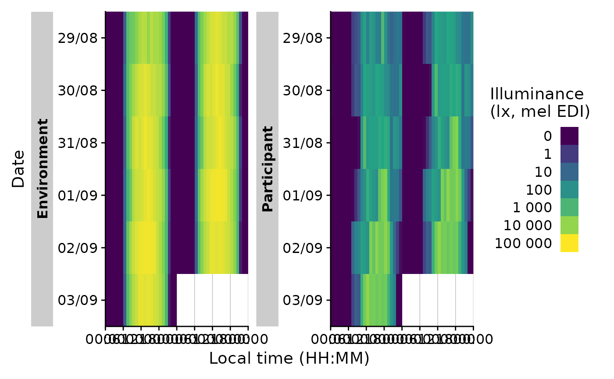
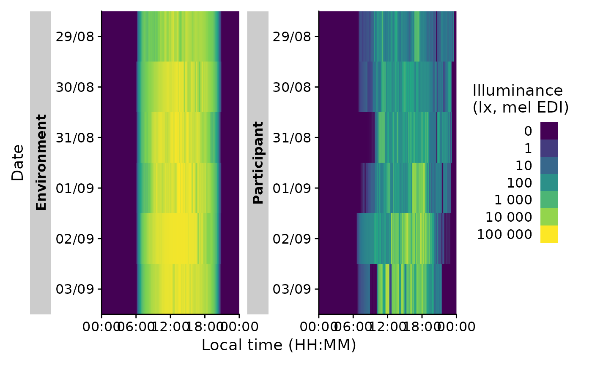
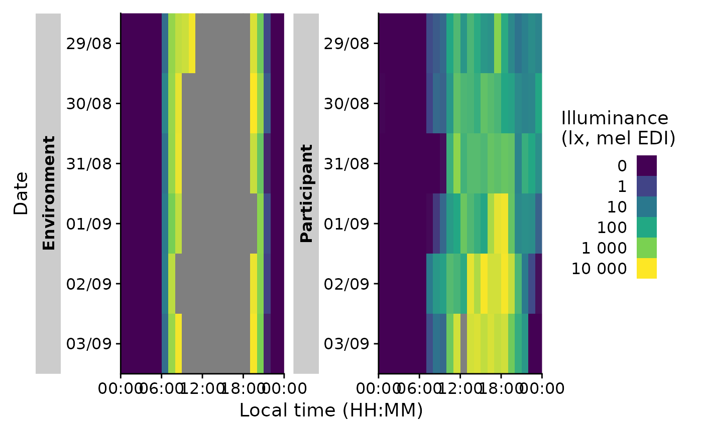
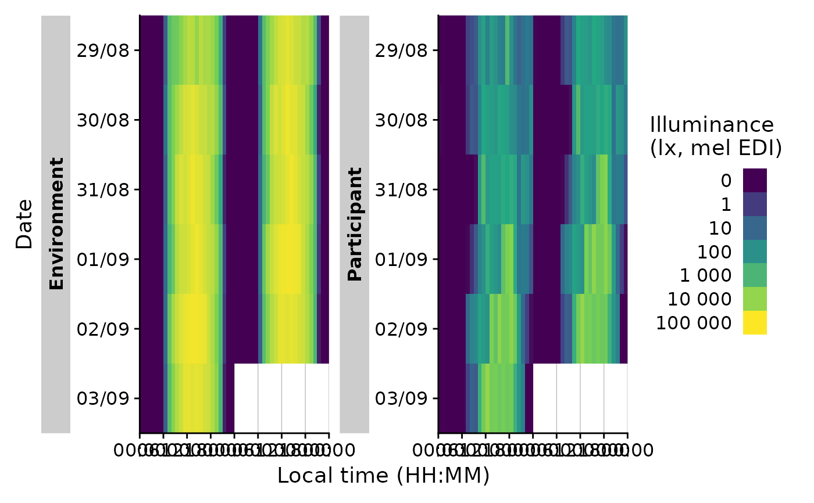
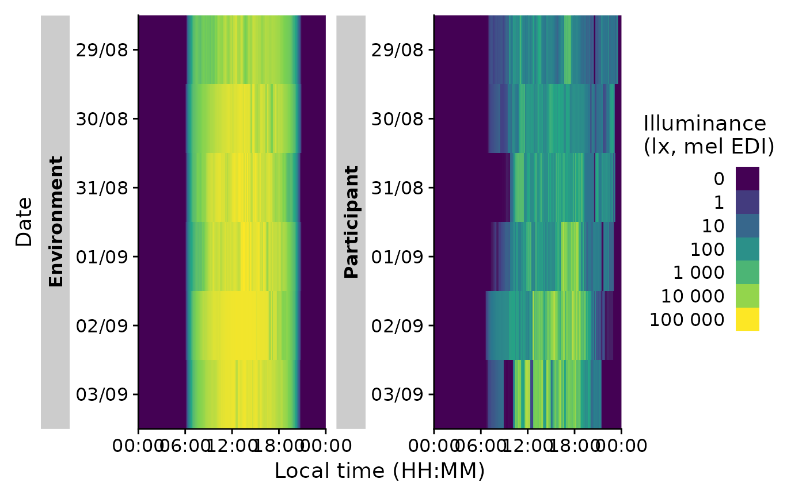
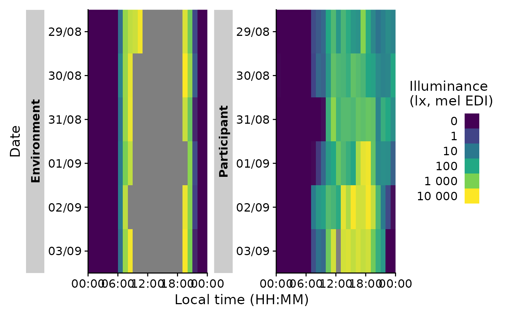

This function plots a heatmap of binned values across the day over all days
in a group. It also allows doubleplot functionality. **gg_heatmap() does
not work with the additive functions gg_photoperiod() and gg_state().
Usage
gg_heatmap(
dataset,
Variable.colname = MEDI,
Datetime.colname = Datetime,
unit = "1 hour",
doubleplot = c("no", "same", "next"),
date.title = "Date",
date.breaks = 1,
date.labels = "%d/%m",
time.title = "Local time (HH:MM)",
time.breaks = hms::hms(hours = seq(0, 48, by = 6)),
time.labels = "%H:%M",
fill.title = "Illuminance\n(lx, mel EDI)",
fill.scale = "symlog",
fill.labels = function(x) format(x, scientific = FALSE, big.mark = " "),
fill.breaks = c(-10^(5:0), 0, 10^(0:5)),
fill.limits = c(0, 10^5),
fill.remove = FALSE,
...
)Arguments
- dataset
A light dataset
- Variable.colname
The column name of the variable to display. Defaults to
MEDI. Expects a symbol.- Datetime.colname
The column name of the datetime column. Defaults to
Datetime. Expects a symbol.- unit
level of aggregation for
Variable.colname. Defaults to"1 hour". Expects a duration or duration-coercible value- doubleplot
Should the data be plotted as a doubleplot. Default is "no". "next" will plot the respective next day after the first, "same" will plot the same day twice.
- date.title
Title text of the y-axis. Defaults to
Date- date.breaks
Spacing of date breaks. Defaults to
1(every day)- date.labels
Formatting code of the date labels
- time.title
Title text of the x-axis. Defaults to
Local time (HH:MM)- time.breaks
Spacing of time breaks. Defauls to every six hours.
- time.labels
Formatting code of the time labels
- fill.title
Title text of the value (fill) scale.
- fill.scale
Scaling of the value (fill) scale. Defaults to
"symlog"(seesymlog_trans())- fill.labels
Formula to format the label values.
- fill.breaks
Breaks in the fill scale
- fill.limits
Limits of the fill scale. A length-2 numeric with the lower and upper scale. If one is replaced with
NA, this limit will be based on the data.- fill.remove
Logical. Should the fill scale be removed? Handy when the fill scale is to be replaced by another scale without the console messages warning about existing scale
- ...
Other arguments to provide to the underlying
ggplot2::geom_raster()
Details
The function uses ggplot2::scale_fill_viridis_c() for the fill scale. The
scale can be substituted by any other scale via the standard + command of
ggplot2. It is recommended to set fill.remove = TRUE to reduce warnings.
Examples
sample.data.environment |> gg_heatmap()
 #heatmap with doubleplot
sample.data.environment |> gg_heatmap(doubleplot = "next")

#change the unit of aggregation
sample.data.environment |> gg_heatmap(unit = "5 mins")

#change the limits of the fill scale
sample.data.environment |> gg_heatmap(fill.limits = c(0, 10^4))

#heatmap with doubleplot
sample.data.environment |> gg_heatmap(doubleplot = "next")

#change the unit of aggregation
sample.data.environment |> gg_heatmap(unit = "5 mins")

#change the limits of the fill scale
sample.data.environment |> gg_heatmap(fill.limits = c(0, 10^4))
